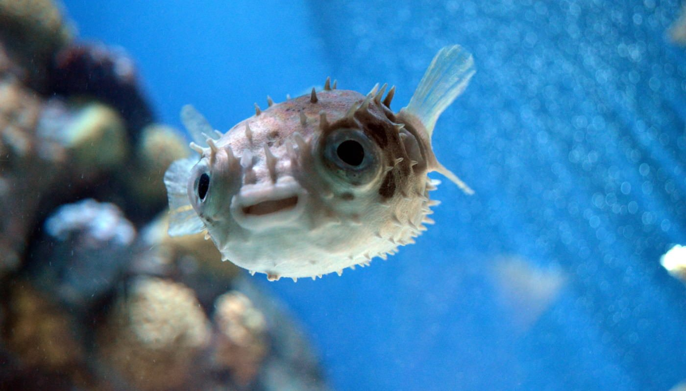

In unserem Zoo können Sie sich auf folgende Tiere freuen:
- Säugetiere
- Die Säugetiere (Mammalia) sind eine Klasse der Wirbeltiere. Zu ihren kennzeichnenden Merkmalen gehören das Säugen des Nachwuchses mit Milch, die in den Milchdrüsen der Weibchen produziert wird, sowie das Fell aus Haaren, das sie in Kombination mit der gleichwarmen Körpertemperatur relativ unabhängig von der Umgebungstemperatur macht. Bis auf wenige Ausnahmen (Kloakentiere) sind Säugetiere lebendgebärend. Säugetiere sind an Land am artenreichsten verbreitet, doch bevölkern sie auch Luft und Wasser. Das Verhaltensspektrum der Säugetiere ist breit und flexibel, einige Gruppen zeigen komplexe soziale Gefüge. Anfang 2018 wurden weltweit 6399 rezente Arten unterschieden.
- Vögel
- Die Vögel sind – nach traditioneller Taxonomie – eine Klasse der Wirbeltiere, deren Vertreter als gemeinsame Merkmale unter anderem Flügel, eine aus Federn bestehende Körperbedeckung und einen Schnabel aufweisen. Vögel leben auf allen Kontinenten. Bislang sind über 10.758 existente rezente Vogelarten bekannt, zusätzlich sind 158 Arten in historischer Zeit ausgestorben. Bei Anwendung des moderneren, phylogenetischen Artkonzepts kommt man auf etwa 18.000 (15.845 bis 20.470) Vogelarten, und auch genetische Daten deuten auf eine in etwa doppelt so hohe Anzahl von Vogelarten hin. Die Wissenschaft von den Vögeln ist die Vogelkunde (Ornithologie).
- Reptilien
- Die Reptilien oder Kriechtiere sind nach traditioneller Auffassung eine Klasse der Wirbeltiere am Übergang von den „niederen“ zu den „höheren“ Wirbeltieren (Säugetiere und Vögel). Als solche sind sie nach moderner Auffassung keine natürliche Gruppe, sondern ein paraphyletisches Taxon, weil sie nicht alle Nachkommen ihres letzten gemeinsamen Vorfahren enthalten. Das klassische Taxon „Reptilia“ wird daher in der zoologischen und paläontologischen Systematik kaum noch verwendet. Der Taxonname dient nur mehr als informeller Sammelbegriff für Landwirbeltiere mit ähnlicher Morphologie und Physiologie . In diesem Sinne werden aktuell 11.440 rezente Reptilienarten unterschieden.
- Fische
- Fische oder Pisces sind aquatisch lebende Wirbeltiere mit Kiemen. Im engeren Sinne wird der Begriff Fische eingeschränkt auf aquatisch lebende Tiere mit Kiefer verwendet. Im weiteren Sinne umfasst er auch Kieferlose, die unter den rezenten Arten noch mit den Rundmäulern vertreten sind. In beiden Fällen fehlt wenigstens ein Nachfahre der Fische (nämlich die Landwirbeltiere) in ihrer Abstammungsgemeinschaft. Daher bilden die Fische keine geschlossene Abstammungsgemeinschaft in der biologischen Systematik, sondern ein paraphyletisches Taxon. Sie sind lediglich eine unvollständige Abstammungsgemeinschaft, bestehend aus einem jüngsten Vorfahren und dem aquatisch lebenden Teil seiner Nachfahren. Die Lehre von der Biologie der Fische ist die Ichthyologie oder Fischkunde.
